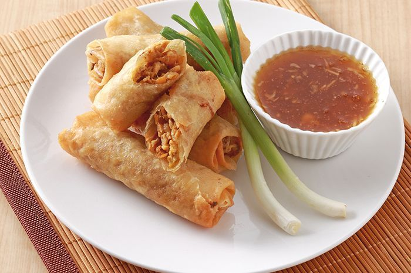
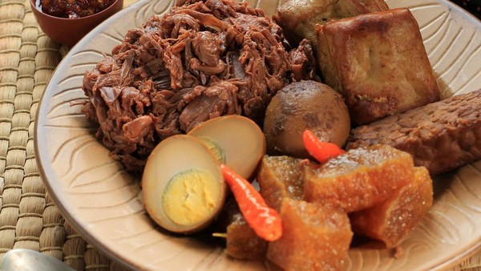
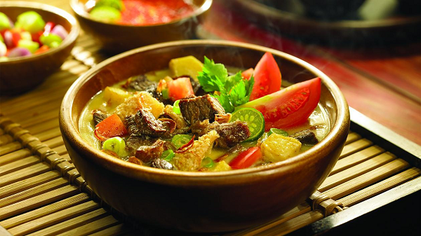

Kuliner Khas Jawa Tengah
Nikmati cita rasa otentik khas tanah Jawa

Lumpia Semarang
Camilan legendaris berisi rebung yang gurih dan terkenal di seluruh Indonesia.

Gudeg Jogja
Masakan nangka muda dengan cita rasa manis dan gurih yang khas.

Soto Babat Semarang
Kuah bening hangat dengan babat empuk, cocok untuk segala suasana.

Wingko Babat
Kue tradisional berbahan kelapa dengan aroma bakar yang khas.